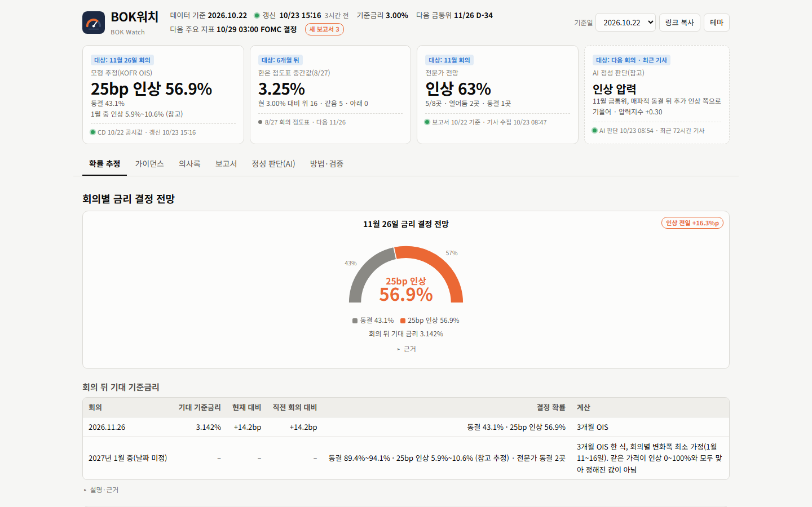

[BOK워치] 증시 폭락, 금리 2~3번 올린 효과…한은 추가 인상에 ‘이중 긴축’ 우려

주식시장은 무너지고, 금리는 더 오를 전망입니다. 증시 급락으로 가계의 주식 자산이 줄어드는 가운데 한국은행은 11월 26일 기준금리를 추가 인상할 것으로 예상됩니다. 저는 23일 중앙일보 기사에서 두 충격이 함께 나타날 때 벌어질 수 있는 ‘이중 긴축’의 위험을 짚었습니다.
씨티은행은 올해 하반기 국내 가계의 주식 자본손실을 약 563조원으로 추산했습니다. 주가 하락으로 인한 소비 위축이 성장과 물가에 미치는 영향은 기준금리를 0.50~0.75%포인트 올린 것과 맞먹을 수 있다는 분석입니다. 금리를 0.25%포인트씩 두세 차례 인상한 것과 비슷한 충격이라는 의미입니다.
이처럼 금융시장에서 이미 긴축 효과가 나타나는 가운데 한국은행은 기준금리를 연 3.00%에서 3.25%로 올릴 것으로 전망됩니다. 앞선 7월과 8월 연속 인상의 효과가 내년 소비에 본격 반영될 수 있다는 점도 변수입니다.
시장 기대를 수치로 확인하기 위해 제가 개발한 BOK워치도 참고했습니다. 11월 23일 확인한 모형의 26일 금리 인상 추정 확률은 71.8%였습니다. 이는 KOFR 관련 시장가격 등을 바탕으로 역산한 확률로, 금통위 결정을 확정적으로 예측하는 값은 아닙니다.

또 하나의 쟁점은 경제성장률 전망입니다. 반도체 가격 급등으로 산업별 GDP 가중치가 달라지면 성장률은 크게 높아질 수 있지만, 그 숫자가 곧바로 내수 회복을 뜻하지는 않습니다. 성장은 반도체가 이끄는데 주가 하락과 이자 부담은 가계 소비를 압박하는 상황이 통화정책의 고민을 깊게 만들고 있습니다.
이 글은 2026년 11월 23일 중앙일보에 실린 기사의 주요 내용을 정리하고, 관련 데이터 서비스인 BOK워치를 함께 소개합니다. 기사 전문은 중앙일보 원문에서 읽을 수 있습니다.